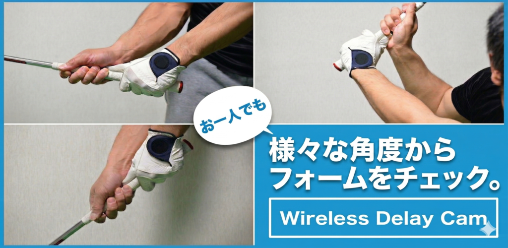
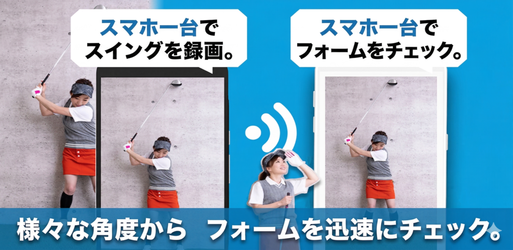
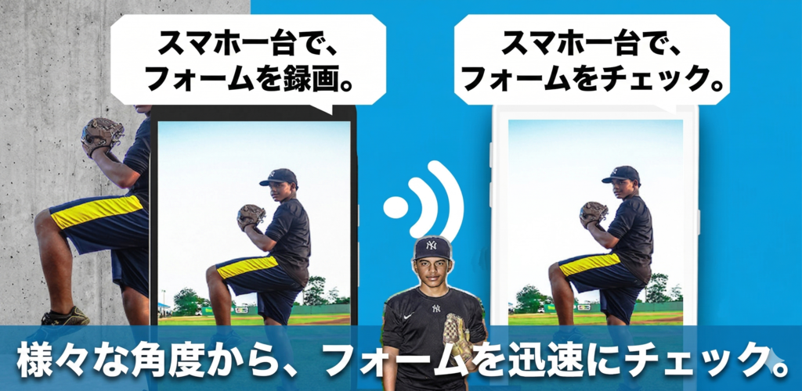
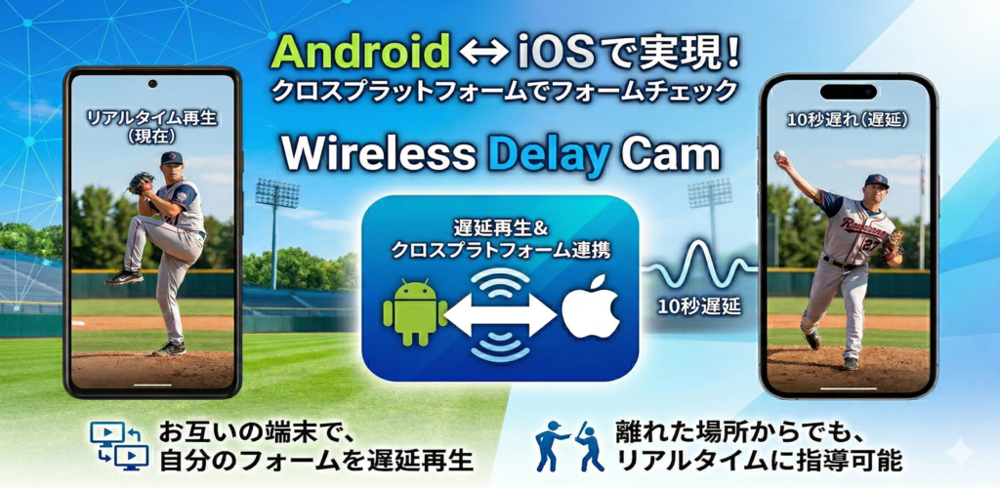

異なるOS同士でもつながる
iPhoneをカメラ、Androidを表示端末にする構成や、その逆の構成も想定したクロスプラットフォーム利用ができます。
日本向けクロスプラットフォーム映像転送
Wireless Delay Camは、iOSとAndroidをまたいでカメラ端末と表示端末をつなぎ、 映像をワイヤレス送信できるアプリです。Wi-Fiはもちろん、テザリング環境でも使えます。 自動検出でも、QRでも、クロスプラットフォームですぐ接続できます。



特徴
iPhoneをカメラ、Androidを表示端末にする構成や、その逆の構成も想定したクロスプラットフォーム利用ができます。
ルーターがない場面でも、端末のテザリングで同一ネットワークを作れば、カメラ端末と表示端末をつないで利用できます。
表示端末を自動検出できるので、同じネットワーク上なら接続準備を短縮できます。見つからない場合は手動導線へ切り替えられます。
表示端末のQRコードをカメラ側で読み取る方式にも対応。OSの違いを意識せず、ネットワーク情報の入力なしでセットアップできます。
受信側でレイテンシを設定できるため、あえて時間差をつけた表示や確認用途に向いています。
受信側ではズーム、左右反転、録画保存に対応。送信側でもストリーム保存を選べます。
使い方
片方をカメラ、もう片方を表示端末として起動します。
同一Wi-Fi上で自動検出するか、QRコードで素早くペアリングします。
表示側で遅延やビットレート、向きを設定して、用途に合う表示に整えます。
受信映像を表示しながら、必要に応じて保存やズーム操作を行えます。
画面


活用例
iPhoneで撮ってAndroidで確認するなど、手元の端末構成に合わせて映像をチェック。
遅延を意図的に入れて、動きの比較や演出用途の表示に活用。
iOSとAndroidが混在する現場でも、専用機材なしで映像確認環境を組みたい場面に。
FAQ
同じWi-Fiネットワーク、またはテザリングで構成した同一ネットワーク上で端末同士が見えることが前提です。外部インターネット自体は必須ではありません。
自動検出に加えて、QRコード経由の接続導線もあります。状況に応じて使い分けできます。
はい。iOS端末とAndroid端末の組み合わせを前提に、送信側と受信側をまたいで接続できるクロスプラットフォーム構成を想定しています。
送信側・受信側の双方にストリーム保存用の設定があります。用途に合わせてオンオフできます。